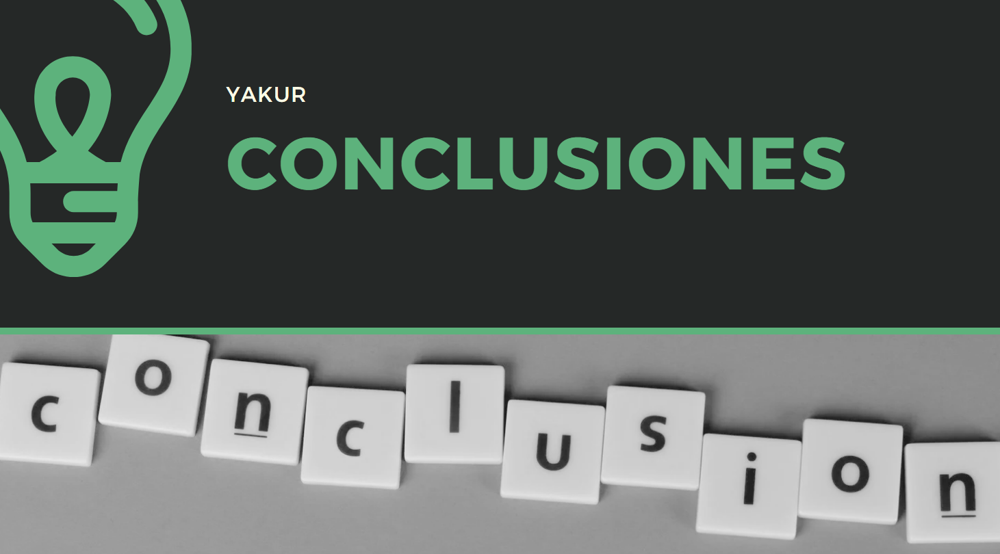

CONCLUSIONES Y REFLEXIÓN FINAL
A lo largo de este proyecto, nos enfrentamos a numerosos desafíos. Desde los primeros problemas con los componentes electrónicos hasta los errores en las impresiones 3D, cada etapa estuvo marcada por obstáculos. Sin embargo, nunca perdimos el foco. Cada error fue una oportunidad de aprendizaje. Nos dio la experiencia necesaria para mejorar tanto el diseño como la programación, y sobre todo, para entender la importancia de la perseverancia en un proyecto de esta envergadura.
Uno de los mayores aprendizajes fue cómo la adaptabilidad jugó un papel fundamental. Nos dimos cuenta de que el camino no siempre es lineal y que los ajustes son parte del proceso creativo. Lo más valioso que adquirimos fue la capacidad de corregir el rumbo rápidamente, aprendiendo de los fallos. Si bien no todos los resultados fueron perfectos desde el inicio, cada iteración nos acercó más a un producto funcional. Esta flexibilidad nos permitió optimizar cada aspecto del sistema y superar los retos que surgieron en el camino.
Lecciones Aprendidas
Este proyecto nos enseñó que el trabajo en equipo y la comunicación constante son esenciales para superar las dificultades. La colaboración entre todos los miembros del equipo fue clave para que el proyecto avanzara a pesar de las dificultades. Además, entendimos que no existen soluciones rápidas; cada ajuste y cada error nos llevó un paso más cerca de la meta. Nos sentimos satisfechos con el proceso y confiados en que el sistema de riego automatizado tiene un gran potencial para facilitar la vida de las personas que lo necesiten.